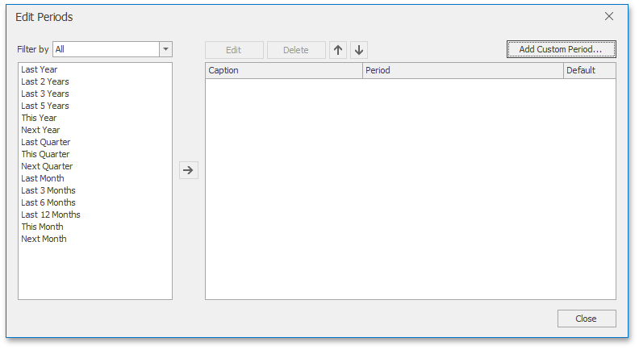
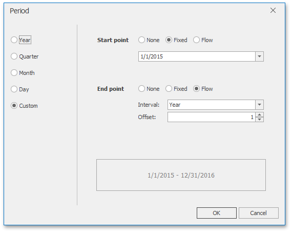

Predefined Ranges
The Range Filter dashboard item allows you to add a number of predefined date-time periods that can be used to perform a selection (for instance, year-to-date or quarter-to-date).

To add a period, click the Options button (the  icon) next to the Argument placeholder or use the Edit Periods button in the ribbon's Design tab. This invokes the Edit Periods dialog.
icon) next to the Argument placeholder or use the Edit Periods button in the ribbon's Design tab. This invokes the Edit Periods dialog.

To add the selected period, use the  button or double-click this period.
button or double-click this period.

This period will be added to the right pane of the Edit Periods dialog. The following settings are available for the added period.
- Caption - Specifies the caption corresponding to the period.
- Period - Displays the date-time interval corresponding to the period.
- Default - Allows you to use the selected period as the default selection in the Range Filter dashboard item.
If necessary, you can customize the selected period by clicking the Edit button in the Edit Periods dialog. This invokes the Period dialog.

Note
Note that the Edit dialog above contains the displayed periods (Year, Quarter, Month, Day) if the group interval of the Range Filter argument is set to Day-Month-Year.
This dialog allows you to add the following periods.
- Year - A period duration is measured in years.
- Previous Year - Identifies the entire previous year.
- This Year - Identifies the entire current year.
- Next Year - Identifies the entire next year.
- Last Years - Identifies a specific number of previous years. Use the Include current option to specify whether or not the period is ended with the current year.
- Next Years - Identifies a specific number of next years. Use the Include current option to specify whether or not the period is started from the current year.
- Year-to-date - A period from the beginning of the current year and up to the current day.
- Quarter - Period duration is measured in quarters.
- Previous Quarter - Identifies the entire previous quarter.
- This Quarter - Identifies the entire current quarter.
- Next Quarter - Identifies the entire next quarter.
- Last Quarter - Identifies a specific number of previous quarters. Use the Include current option to specify whether or not the period ends with the current quarter.
- Next Quarter - Identifies a specific number of following quarters. Use the Include current option to specify whether or not the period starts from the current quarter.
- Quarter-to-date - A period from the beginning of the current quarter and up to the current day.
- Month - Period duration is measured in months.
- Previous Month - Identifies the entire previous month.
- This Month - Identifies the entire current month.
- Next Month - Identifies the entire next month.
- Last Month - Identifies a specific number of previous months. Use the Include current option to specify whether or not the period ends with the current month.
- Next Month - Identifies a specific number of the following months. Use the Include current option to specify whether or not the period starts with the current month.
- Month-to-date - A period from the beginning of the current month and up to the current day.
- Day - Period duration is measured in days.
- Previous Day - Identifies the entire previous day.
- This Day - Identifies the entire current day.
- Next Day - Identifies the entire next day.
- Last Day - Identifies a specific number of previous days. Use the Include current option to specify whether or not the period ends with the current day.
- Next Day - Identifies a specific number of the following days. Use the Include current option to specify whether or not the period starts with the current day.
Custom - A custom period.
Allows you to specify a period with the custom boundaries (Start point and End point).

You can specify the following settings for the start/end boundaries.
- None - The selection will begin from the start/end of the visible range.
- Fixed - Allows you to select a specific date value using the calendar.
Flow - Allows you to select a relative date value. The Interval option specifies the interval between the current date and the required date. The Offset option allows you to set the number of such intervals.
Note
Note that the Offset option can accept negative and positive values. Negative values correspond to dates before the current date, while positive values correspond to future dates.